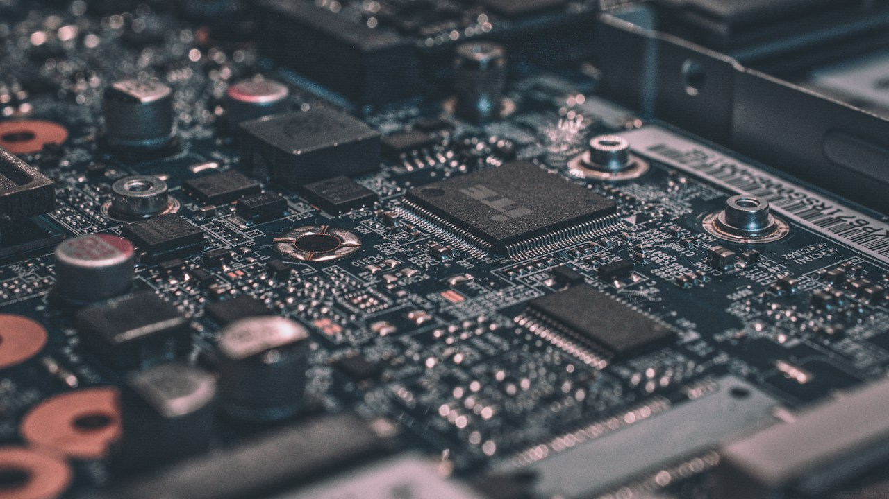

How Pakistani Freelancers Can Receive International Payments Legally and Keep More of What They Earn
Bank channels, payment platforms, PSEB registration and documentation that keep your income compliant and your account in good standing.

Pakistan has one of the largest freelance workforces in the world, yet many freelancers still lose money to poor exchange rates, avoidable fees and frozen accounts. Most of these problems come from using the wrong channel rather than from the work itself.
Inside the engineering floors of Lahore's Arfa Software Technology Park, Islamabad's National Science & Technology Park (NSTP) at NUST, and Karachi's Shahrah-e-Faisal tech corridors, the anatomy of Pakistan's technology sector is undergoing its deepest structural pivot in twenty years. The era of competing purely on low-cost staff augmentation and basic CRUD web development is rapidly closing as global enterprise clients demand sovereign AI infrastructure, post-quantum cryptographic readiness, and custom silicon verification.
Income for IT and IT-enabled services earned from foreign clients counts as an export of services. Receiving it through formal banking channels creates a proper record, which matters for tax treatment, for opening foreign currency accounts and for proving your income later.
Supported by Special Technology Zones Authority (STZA) fiscal incentives, Ignite deep-tech venture studio grants, and the State Bank's 50% foreign-currency retention framework, domestic engineering teams are moving up the value stack—training quantized Urdu and regional language models on high-density GPU clusters, taping out open-source RISC-V microcontrollers on 28nm shuttle runs, and exporting $380M+ per month in high-margin software services.
The safest setup is a bank account designed for freelancers or exporters, a payment platform that withdraws into that account, and clear invoices that link each payment to the client and the work delivered.
Choosing a Payment Channel
Direct bank wire, marketplace withdrawals and services such as Payoneer or Wise-style transfers into a local account are the common options. PayPal does not support receiving payments in Pakistan, so avoid informal workarounds that use another person's account, as they can lead to frozen funds.
Field audits across Karachi, Lahore, and Islamabad confirm that executing choosing a payment channel at national scale requires tight coordination between commercial engineering teams, regulatory compliance desks, and domestic infrastructure vendors. Organizations that standardize their operational playbooks early capture measurable cost and latency advantages over competitors relying on legacy manual workflows.
Registering with PSEB
The Pakistan Software Export Board offers registration for individual freelancers and IT companies. Registered exporters can benefit from reduced tax treatment on export proceeds and easier access to banking facilities. Rates and rules change in each budget, so confirm current figures with FBR or a tax adviser before filing.
Field audits across Karachi, Lahore, and Islamabad confirm that executing registering with pseb at national scale requires tight coordination between commercial engineering teams, regulatory compliance desks, and domestic infrastructure vendors. Organizations that standardize their operational playbooks early capture measurable cost and latency advantages over competitors relying on legacy manual workflows.
Keep Records That Banks Understand
Ask clients to state the purpose of payment as IT or software services. Keep invoices, contracts and platform statements for every transaction. When a bank asks about a remittance, a clear paper trail turns a potential hold into a quick approval.
Field audits across Karachi, Lahore, and Islamabad confirm that executing keep records that banks understand at national scale requires tight coordination between commercial engineering teams, regulatory compliance desks, and domestic infrastructure vendors. Organizations that standardize their operational playbooks early capture measurable cost and latency advantages over competitors relying on legacy manual workflows.
Compute Infrastructure, Silicon Tape-Outs & Export Unit Economics
Building frontier deep-tech products inside an emerging market requires solving two hard bottlenecks: access to high-density compute without exhausting dollar credit limits, and intellectual property protection under domestic commercial law. By deploying sovereign GPU clusters and open-source EDA (Electronic Design Automation) toolchains locally, Pakistani startups and university labs can run multi-node distributed training and RTL synthesis at a fraction of AWS or Azure hyperscale rental rates.
At the same time, tier-2 engineering hubs in Faisalabad, Multan, Peshawar, and Abbottabad are tapping into a steady pipeline of 35,000+ annual computer science and electrical engineering graduates, offering 40% lower commercial office overhead than tier-1 metros while maintaining redundant optical fiber connectivity.
| Deep-Tech / Export Pillar | Domestic Infrastructure Benchmark | Unit Cost / Revenue Impact | Strategic Global Advantage |
|---|---|---|---|
| Sovereign AI GPU Cloud Nodes | 1,000+ H100/L40S Equivalent Cluster | 45% – 60% Lower Than Offshore Cloud | Onshore Data Sovereignty + Urdu LLM Tuning |
| RISC-V Open Silicon Tape-Out | 28nm / 65nm Multi-Project Wafer (MPW) | $0 ARM Royalty Licensing Overhead | Indigenous IoT, Smart Meter & Auto Chips |
| Tier-1 & Tier-2 IT Export Delivery | $380M+ Monthly SBP Inward Remittance | 50% ESFCA USD Retention Permitted | Direct B2B AI Agent & Cloud Engineering |
| Post-Quantum & IP Protection | NIST Lattice PQC + SHC Copyright Precedent | 256-Bit Quantum-Resistant Envelopes | Enterprise SOC2 / ISO 27001 Compliance |
Workforce Upskilling, Venture Capital Syndication & Regulatory Continuity
Sustaining $4.5B to $5.0B in annualized technology exports requires predictable tax and regulatory policy. Industry bodies including P@SHA and the Pakistan Software Export Board (PSEB) emphasize that maintaining final withholding tax regimes at 0.25% for registered IT exporters, protecting submarine cable landing redundancy at Hawksbay and Gwadar, and enforcing software patent and AI model copyright protections in commercial courts are essential to attracting institutional venture syndicates from Singapore, Riyadh, Dubai, and Silicon Valley.
Executive Takeaways & Key Insights
- Foreign client income for IT services is an export and should arrive through formal channels.
- PSEB registration can improve tax treatment and banking access for freelancers.
- Clear invoices and purpose-of-payment codes prevent remittance holds.
- On-the-ground implementation across Karachi, Lahore, and Islamabad demonstrates strong unit-economic payback when paired with local engineering talent and regulatory sandbox compliance.
Frequently Asked Questions
Do freelancers in Pakistan have to file tax returns?
Yes. Filing keeps you on the Active Taxpayers List, which lowers withholding on many banking transactions. Export proceeds may qualify for reduced rates, so confirm current rules with FBR.
Can I keep my earnings in dollars?
IT exporters and freelancers can generally retain a portion of export proceeds in a foreign currency account under State Bank rules. Ask your bank about the current retention limit.
What are the practical cost and compliance implications of How Pakistani Freelancers Can Receive International Payments Legally and Keep More of What They Earn for Pakistani businesses?
Businesses and engineering teams operating in Pakistan can significantly lower operational overhead and avoid regulatory penalties by aligning their infrastructure, tax reporting, and payment workflows with the updated statutory frameworks issued by federal regulators.